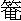

山外青山樓外樓，西湖歌舞幾時休？
暖風薰得遊人醉，直把杭州作汴州。
話說西湖景致，山水鮮明。晉朝咸和年間，山水大發，洶湧流入西門。忽然水內有牛一頭見，深身金色。後水退，其牛隨行至北山，不知去向，哄動杭州市上之人，皆以為顯化。所以建立一寺，名曰金牛寺。西門，即今之湧金門，立一座廟，號金華將軍。當時有一番僧，法名渾壽羅，到此武林郡雲游，玩其山景，道：「靈鴛山前小峰一座，忽然不見，原來飛到此處。」當時人皆不信。僧言：「我記得靈鴛山前峰嶺，喚做靈騖嶺。這山洞裡有個白猿，看我呼出為驗。」果然呼出白猿來。山前有一亭，今喚做冷泉亭。又有一座孤山，生在西湖中。先曾有林和靖已先生在此山隱居，使人搬挑泥石，砌成一條走路，東接斷橋，西接棲霞嶺，因此喚作孤山路。又唐時有刺史白樂天，築一條路，甫至翠屏山，北至棲霞嶺，喚做白公堤，不時被山水沖倒，不只一番，用官錢修理。後宋時，蘇東坡來做太守，因見有這兩條路被水沖壞，就買木石，起人夫，築得堅固。六橋上朱紅欄桿，堤上栽種桃柳，到春景融和，端的十分好景，堪描入畫。後人因此只喚做蘇公堤。又孤山路畔，起造兩條石橋，分開水勢，東邊喚做斷橋，西邊喚做西寧橋。真乃：隱隱山藏三百寺，依稀雲鎖二高峰。
說話的，只說西湖美景，仙人古蹟。俺今日且說一個俊俏後生，只因遊玩西湖，遇著兩個婦人，直惹得幾處州城，鬧動了花街柳巷。有分教才人把筆，編成一本風流話本。單說那子弟，姓甚名誰？遇著甚般樣的婦人？惹出甚般樣事？
「有詩為證：
清明時節雨紛紛，路上行人欲斷魂。
借問酒家何處有，牧童遙指杏花村。
話說宋高宗南渡，紹興年問，杭州臨安府過軍橋黑珠巷內，有一個宦家，姓李名仁。見做南廊閣子庫募事官，又與邵太尉管錢糧。家中妻子有一個兄弟許宣，排行小乙。他爹曾開生藥店，自幼父母雙亡，卻在表叔李將仕家生藥鋪做主管，年方二十二歲。那生藥店開在官巷口。」忽一日，許宣在鋪內做買賣，只見一個和尚來到門首，打個問訊道：「貧僧是保叔塔寺內僧，前日已送饅頭並卷子在宅上。今清明節近，追修祖宗，望小乙官到寺燒香，勿誤！」許宣道：「小子準來。」
和尚相別去了。許宣至晚歸姐大家去。原來許宣無有老小，只在姐姐家住，當晚與姐姐說：「今日保叔塔和尚來請燒餐予，明日要薦祖宗，走一遭了來。」次日早起買了紙馬、蠟燭、經幡、錢垛一應等項，喫了飯，換了新鞋襪衣服，把答子錢馬，使條袱子包了，逞到官巷口李將仕家來。李將仕見了，間許宣何處去。許宣道：「我今日要去保叔塔燒

子，追薦祖宗，乞叔叔容暇一日。」李將仕道：「你去便回。」許宣離了鋪中，入壽安坊、花市街，過井亭橋，往清河街後鐵塘門，行石函橋，過放生碑，遷到保叔塔寺。尋見送饅頭的和尚，仟悔過疏頭，燒了子，到佛殿上看眾僧念經，吃齋罷，別了和尚，離寺迤邐閒走，過西寧橋、孤山路、四聖觀，來看林和靖墳，到六一泉閒走。不期雲生西北，霧鎖東南，落下微微細雨，漸大起來。正是清明時節，少不得天公應時，催花雨下，那陣雨下得綿綿不絕。許宣見腳下濕，脫下了新鞋襪，走出四聖觀來尋船，不見一隻。正沒擺布處，只見一個老兒，搖著一隻船過來。許宣暗喜，認時正是張阿公。叫道：「張阿公，搭我則個！」老兒聽得叫，認時，原來是許小乙，將船搖近岸來，道：「小乙官，著了雨，不知要何處上岸？許宣道：「湧金門上岸。」這老兒扶許宣下船，離了岸，搖近豐樂樓來。
搖不上十數丈水面，只見岸上有人叫道：「公公，搭船則個！」許宣看時，是一個婦人，頭戴孝頭舍，烏雲畔插著些素鋇梳，穿～領白絹衫兒，下穿一條細麻布裙。這婦人肩下一個丫鬢，身上穿著青衣服，頭上一雙角害，戴兩條大紅頭須，插著兩件首飾，手中捧著一個包兒要搭船。那老張對小乙官道：「『因風吹火，用力不多。』一發搭了他去。」許宣道：「你便叫他下來。」老兒見說，將船傍了岸邊。那婦人同丫罰下船，見了許宣，起一點朱唇，露兩行碎玉，深深道一「個萬福。許宣慌忙起身答禮。那娘子和丫授艙中坐定了。娘子把秋波頻轉，瞧著許宣。許宣平生是個老實之人，見了此等如花似五的美婦人，旁邊又是個俊俏美女樣的丫鬟，也不免動念。那婦人道：「不敢動問官人，高姓尊諱？」許宣答道：「在下姓許名宣，排行第一。」婦人道：「宅上何處？」許宣道：「寒舍住在過軍橋黑珠兒巷，生藥鋪內做買賣。」那娘子問了一口，許宣尋思道：「我也問他一間。」起身道：「不敢拜問娘子高姓，潭府何處？」那婦人答道：「奴家是白三班白殿直之妹，嫁了張官人，不幸亡過了，見葬在這雷嶺。為因清明節近，今日帶了丫鬟，往墳上祭掃了方口，不想值雨。若不是搭得官人便船，實是狼狽。」又閒講了一口，迤邐船搖近岸。只見那婦人道：「奴家一時心忙，不曾帶得盤纏在身邊，萬望官人處借些船錢還了，並不有負。」許宣道：「娘子自便，不妨，些須船錢不必計較。」還罷船錢，那雨越不祝許宣挽了上岸。那婦人道：「奴家只在箭橋雙茶坊巷口。若不棄時，可到寒舍拜茶，納還船錢。」許宣道：「小事何消掛懷。天色晚了，改日拜望。說罷，婦人共丫鬢自去。
許宣入湧金門，從人家屋簷下到三橋街，見一個生藥鋪，正是李將仕兄弟的店，許宣走到鋪前，正見小將仕在門前。小將仕道：「小乙哥晚了，那裡去？」許宣道：「便是去保叔塔燒答子，著了雨，望借一把傘則個！」將仕見說叫道：「老陳把傘來，與小乙官去。」不多時，老陳將一把雨傘撐開道：「小乙官，這傘是清湖八字橋老實舒家做的。八十四骨，紫竹柄的好傘，不曾有一些兒破，將去休壞了！仔細，仔細！」許宣道：「不必吩咐。」接了傘，謝了將仕，出羊壩頭來。到後市街巷口，只聽得有人叫道：「小乙官人。」許宣回頭看時，只見沈公井巷口小茶坊簷下，立著一個婦人，認得正是搭船的白娘子。許宣道：「娘子如何在此？」白娘子道：「便是雨不得住，鞋兒都踏濕了，教青青回家，取傘和腳下。又見晚下來。望官人搭幾步則個！」許宣和白娘子合傘到壩頭道：「娘子到那裡去？」白娘子道：「過橋投箭橋去。」許宣道：「小娘子，小人自往過軍橋去，路又近了。不若娘子把傘將去，明日小人自來齲」白娘子道：「卻是不當，感謝官人厚意！」許宣沿人家屋簷下冒雨回來，只見姐夫家當直王安，拿著釘靴雨傘來接不著，卻好歸來。到家內喫了飯。當夜思量那婦人，翻來覆去睡不著。夢中共日間見的一般，情意相濃，不想金雞叫一聲，卻是南柯一夢。正是：心猿意馬馳千里，浪蝶狂蜂鬧五更。
到得天明，起來梳洗罷，喫了飯，到鋪中心忙意亂，做些買賣也沒心想。到午時後，思量道：「不說一謊，如何得這傘來還人？」當時許宣見老將仕坐在櫃上，向將仕說道：「姐夫叫許宣歸早些，要送人情，請假半日。」將仕道：「去了，明日早些來！」許宣唱個喏，逕來箭橋雙茶坊巷口，尋問白娘子家裡「，問了半日，沒一個認得。正躊躇間，只見白娘子家丫鬟青青，從東邊走來。許宣道：「姐姐，你家何處住？討傘則個。」青青道：「官人隨我來。」許宣跟定青青，走不多路，道：「只這裡便是。」
許宣看時，見一所樓房，門前兩扇大門，中間四扇看街桐子眼，當中掛頂細密朱紅簾子，四下排著十二把黑漆交椅，掛四幅名人山水古畫。對門乃是秀王府牆。那丫頭轉入簾子內道：「官人請入裡面坐。」許宣隨步入到裡面，那青青低低悄悄叫道：「娘子，許小乙官人在此。」白娘子裡面應道：「請官人進裡面拜茶。」許宣心下遲疑。青青三回五次，催許宣進去。許宣轉到裡面，只見四扇暗桐子窗，揭起青布幕，一個坐起。卓上放一盆虎須葛蒲，兩邊也掛四幅美人，中間掛一幅神像，卓上放一個古銅香爐花瓶。那小娘子向前深深的道一個萬福，道：「夜來多蒙小乙官人應付周全，識荊之初；甚是感激不淺」許宣：「些微何足掛齒！」白娘子道：「少坐拜茶。茶罷，又道：「片時薄酒三杯，表意而已。」許宣方欲推辭，青青已自把菜蔬果品流水排將出來。許宣道：「感謝娘子置酒，不當厚擾。」飲至數杯，許宣起身道：「今日天色將晚，路遠，小子告回。」娘子道：「官人的傘，舍親昨夜轉借去了，再飲幾杯，著人取來。」許宣道：「日晚，小子要回。」
娘子道：「再飲一杯。」許宣道：「飲撰好了，多感，多感！」白娘子道：「既是官人要口，這傘相煩明日來取則個。」許宣只得相辭了回家。
至次日，又來店中做些買賣，又推個事故，卻來白娘子家取桑娘子見來，又備三杯相款。許宣道：「娘子還了小子的傘罷，不必多擾。」那娘子道：「既安排了，略飲一杯。」許宣只得坐下。那白娘子篩一杯酒，遞與許宣，啟櫻桃口，露榴子牙，嬌滴滴聲音，帶著滿面春風，告道：
小官人在上，真人面前說不得假話。奴家亡了丈夫，想必和官人有宿世姻緣，一見便蒙錯愛，正是你有心，我有意。
煩小乙官人尋一個媒證，與你共成百年姻眷，不在天生一對，卻不是好！」許宣聽那婦人說罷，自己尋思：「真個好一段姻緣。若取得這個渾家，也不在了。我自十分肯了，只是一件不諧：思量我日間在李將仕家做主管，夜間在姐夫家安歇，雖有些少東西，只好辦身上衣服。如何得錢來娶老小？」自沉吟不答。只見白娘子道：「官人何故不回言語？」許宣道：「多感過愛，實不相瞞，只為身邊窘迫，不敢從命！」娘子道：「這個容易！我羹中自有餘財，不必掛念。」。 便叫青青道：「你去取一錠白銀下來。」只見青青手扶欄桿，腳踏胡梯，取下一個包兒來，遞與白娘子。娘子道：「小乙官人，這東西將去使用，少欠時再來齲」親手遞與許宣。
許宣接得包兒，打開看時，卻是五十兩雪花銀子。藏於袖中，起身告回，青青把傘來還了許宣。許宣接得相別，一逕回家，把銀子藏了。當夜無話。
明日起來，離家到官巷口，把傘還了李將仕。許宣將些碎銀子買了一隻肥好燒鵝、鮮魚精肉、嫩雞果品之類提回家來，又買了一搏酒，吩咐養娘丫鬟安排整下。那日卻好姐夫李募事在家。飲撰俱已完備，來請姐夫和姐姐吃酒。李募事卻見許宣請他，到喫了一驚，道：「今日做甚麼子壞鈔？日常不曾見酒盞兒面，今朝作怪！」三人依次坐定飲酒。酒至數杯，李募事道：「尊舅，沒事教你壞鈔做甚麼？」許宣道：「多謝姐夫，切莫笑話，輕微何足掛齒。感謝姐夫姐姐管僱多時。
一客不煩二主人，許宣如今年紀長成，恐慮後無人養育，卞是了處。今有一頭親事在此說起，望姐夫姐姐與許宣主張，結果了一生終身，也好。姐夫姐姐聽得說罷，肚內暗自尋思道：「許宣日常一毛不拔，今日壞得些錢鈔，便要我替他討老小？夫妻二人，你我相看，只不回話。吃酒了，許宣自做買賣。
過了三兩日，許宣尋思道：「姐姐如何不說起？」忽一日，見姐姐問道：「曾向姐夫商量也不曾？」姐姐道：「不曾。」許宣道：「如何不曾商量？」姐姐道：「這個事不比別樣的事，倉卒不得。又見姐夫這幾日面色心焦，我怕他煩惱，不敢問他。」
許宣道：「姐姐你如何不上緊？這個有甚難處，你只怕我教姐夫出錢，故此不理。」許宣便起身到臥房中開箱，取出白娘子的銀來，把與姐姐道：「不必推故。只要姐夫做主。」姐姐道：「吾弟多時在叔叔家中做主管，積趟得這些私房，可知道要娶老婆。你且去，我安在此。」
卻說李募事歸來，姐姐道：「丈夫，可知小舅要娶老婆，原來自趔得些私房，如今教我倒換些零碎使用。我們只得與他完就這親事則個。」李募事聽得，說道：「原來如此，得他積得些私房也好。拿來我看。」做妻的連忙將出銀子遞與丈夫。李募事接在手中，翻來復去，看了上面鑿的字號，大叫一聲：「苦！不好了，全家是死！」那妻喫了一驚，問道：「丈夫有甚麼利害之事？」李募事道：「數日前邵太尉庫內封記鎖押俱不動，又無地穴得入，平空不見了五十錠大銀。見今著落臨安府提捉賊人，十分緊急，沒有頭路得獲，累害了多少人。出榜緝捕，寫著字號錠數，『有人捉獲賊人銀子者，賞銀五十兩；知而不首，及窩藏賊人者，除正犯外，全家發邊遠充軍。』這銀子與榜上字號不差，正是邵太尉庫內銀子。即今捉捕十分緊急，正是『火到身邊，顧不得親眷，自可去撥，。明日事露，實難分說：不管他偷的借的，寧可苦他，不要累我。只得將銀子出首，免了一家之害。」老婆見說了，合口不得，目睜口呆。當時拿了這錠銀子，逕到臨安府出首。
那大尹聞知這話，一夜不睡。次日，火速差緝捕使臣何立。何立帶了伙伴，井一班眼明手快的公人，逕到官巷口李家生藥店，提捉正賊許宣。到得櫃邊，發聲喊，把許宣一條繩子 縛了，一聲鑼，一聲鼓，解上臨安府來。正值韓大尹升廳，押過許宣當廳跪下，喝聲：「打！」許宣道：「告相公不必用刑，不知許宣有何罪？」大尹焦躁道：「真贓正賊，有何理說，還說無罪？邵太尉府中不動封鎖，不見了一號大銀五十錠。現有李募事出首，一定這四十九錠也在你處。想不動封皮，不見了銀子，你也是個妖人！不要打？」喝教：「拿些穢血來！」許宣方知是這事，大叫道：「不是妖人，待我分說！」大尹道：「且住，你且說這銀子從何而來？」許宣將借傘討傘的上項事，一一細說一遍。大尹道：「白娘子是甚麼樣人？見住何處？」許宣道：「憑他說是白三班白殿直的親妹子，如今見住箭橋邊，雙茶坊巷口，秀王牆對黑樓子高坡兒內祝」那大尹隨即便叫緝捕使臣何立，押領許宣，去雙茶坊巷口捉拿本婦前來。
縛了，一聲鑼，一聲鼓，解上臨安府來。正值韓大尹升廳，押過許宣當廳跪下，喝聲：「打！」許宣道：「告相公不必用刑，不知許宣有何罪？」大尹焦躁道：「真贓正賊，有何理說，還說無罪？邵太尉府中不動封鎖，不見了一號大銀五十錠。現有李募事出首，一定這四十九錠也在你處。想不動封皮，不見了銀子，你也是個妖人！不要打？」喝教：「拿些穢血來！」許宣方知是這事，大叫道：「不是妖人，待我分說！」大尹道：「且住，你且說這銀子從何而來？」許宣將借傘討傘的上項事，一一細說一遍。大尹道：「白娘子是甚麼樣人？見住何處？」許宣道：「憑他說是白三班白殿直的親妹子，如今見住箭橋邊，雙茶坊巷口，秀王牆對黑樓子高坡兒內祝」那大尹隨即便叫緝捕使臣何立，押領許宣，去雙茶坊巷口捉拿本婦前來。
何立等領了鈞旨，一陣做公的逕到雙茶坊巷口秀王府牆對黑樓子前看時：門前四扇看階，中間兩扇大門，門外避藉陛，坡前卻是垃圾，一條竹子橫夾著。何立等見了這個模佯，到都呆了。當時就叫捉了鄰人，上首是做花的丘大，下首是做皮匠的孫公。那孫公擺忙的吃他一驚，小腸氣發，跌倒在地。眾鄰舍都走來道：「這裡不曾有甚麼白娘子。這屋在五六年前有一個毛巡檢，合家時病死了。青天白日，常有鬼出來買東西，無人敢在裡頭住，幾日前，有個瘋子立在門前唱暗。何立教眾人解下橫門竹竿，裡面冷清清地，起一陣風，卷出一道腥氣來。眾人都喫了一驚，倒退幾步。許宣看了，則聲不得，一似呆的。做公的數中，有一個能膽大，排行第二，姓王，專好酒吃，都叫他做好酒王二。王二道：「都跟我來！」發聲喊一齊哄將入去，看時板壁、坐起、卓凳都有。來到胡梯邊，教王二前行，眾人跟著，一齊上樓。樓上灰塵三寸厚。眾人到房（前，推開房門一望，床上掛著一張帳子，箱籠都有。只見一個如花似玉穿著白的美貌娘子，坐在床上。眾人看了，不敢向前。眾人道：「不知娘子是神是鬼？我等奉臨安大尹鈞旨，喚你去與許宣執證公事。」那娘子端然不動。好酒王二道：「眾人都不敢向前，怎的是了？你可將一壇酒來，與我喫了，做我不著，捉他去見大尹。」眾人連忙叫兩三個下去提一壇酒來與王二吃。王二開了壇口，將一壇酒吃盡了，道：「做我不著！」將那空壇望著帳子內打將去。不打萬事皆休，才然打去，只聽得一聲響，卻是青天裡打一個霹靂，眾人都驚倒了！起來看時，床上不見了那娘子，只見明晃晃一堆銀子。眾人向前看了道：「好了。」計數四十九錠。眾人道：「我們將銀子去見大尹也罷。」扛了銀子，都到臨安府。
何立將前事稟覆了大尹。大尹道：「定是妖怪了。也罷，鄰人無罪回家。」差人送五十錠銀子與邵太尉處，開個緣由，一一稟覆過了。許宣照「不應得為而為之事。理重者決杖免刺，配牢城營做工，滿日疏放，牢城營乃蘇州府管下。李募事因出首許宣，心上不安，將邵太尉給賞的五十兩銀子盡數付與小舅作為盤費。李將仕與書二封，一封與押司范院長，一封與吉利橋下開客店的王主人。
許宣痛哭一場，拜別姐夫姐姐，帶上行枷，兩個防送人押著，離了杭州到東新橋，下了航船。
不一日，來到蘇州。先把書會見了范院長井王主人。王主人與他官府上下使了錢，打發兩個公人去蘇州府，下了公文，交割了犯人，討了回文，防送人自回。范院長、王主人保領許宣不入牢中，就在王主人門前樓上歇了。許宣心中愁問，壁上題詩一首：
獨上高樓望故鄉，愁看斜日照紗窗。
平生自是真誠士，誰料相逢妖媚娘。
白白不知歸甚處？青青那識在何方？
拋離骨肉來蘇地，思想家中寸斷腸！
有話即長，無話即短，不覺光陰似箭，日月如梭，又在王主人家住了半年之上。忽遇九月下旬，那王主人正在門首閒立，看街上人來人往。只見遠遠一乘轎子，旁邊一個丫鬟跟著，道：「借問一聲，此間不是王主人家麼？」王主人汪忙起身道：「此間便是。你尋誰人？丫鬟道：「我尋臨安府來的許小乙官人。」主人道：「你等一等，我便叫他出來。」這乘轎子便歇在門前。王主人便入去，叫道：「小乙哥，有人尋你。」許宣聽得，急走出來，同主人到門前看時，正是青青跟著，轎於裡坐著白娘子。許宣見了，連聲叫道：「死冤家！自被你盜了官庫銀子，帶累我喫了多少苦，有屈無伸。如今到此地位，又趕來做甚麼？可羞死人！」那白娘子道：「小乙官人不要怪我，今番特來與你分辯這件事。我且到主人家裡面與你說。」
白娘子叫青青取了包裹下轎。許宣道：「你是鬼怪，不許入來！」擋住了門不放他。那白娘子與主人深深道了個萬福，道：「奴家不相瞞，主人在上，我怎的是鬼怪？衣裳有縫，對日有影。不幸先夫去世，教我如此被人欺負。做下的事，是先失日前所為，非干我事。如今怕你怨暢我，特地來分說明白了，我去也甘心。」
主人道：「且教娘子人來坐了說。」那娘子道：「我和你到裡面對主人家的媽媽說。」門前看的人，自都散了。
許宣入到裡面，對主人家並媽媽道：「我為他偷了官銀子事。如此如此，因此教我吃場官司。如今又趕到此，有何理說？白娘子道：「先夫留下銀子，我好意把你，我也不知怎的來的？」許宣道：「如何做公的捉你之時，門俞都是垃圾，就帳子裡一響不見了你？」白娘子道：「我聽得人說你為這銀子捉了去，我怕你說出我來，捉我到官，妝幌子羞人不好看。我無奈何，只得走去華藏寺前姨娘家躲了；使人擔垃圾堆在門前，把銀子安在床上，央鄰舍與我說謊。」許宣道：「你卻走了去，教我吃官事！」白娘子道：「我將銀子安在床上，只指望要好，那裡曉得有許多事情？我見你配在這裡，我便帶了些盤纏，搭船到這裡尋你。如今分說都明白了，我去也。敢是我和你前生沒有夫妻之分！」那王主人道：「娘子許多路來到這裡，難道就去？且在此間住幾日，卻理會。」青青道：「既是主人家再三勸解，娘子且住兩日，當初也曾許嫁小乙官人。」白娘子隨口便道：「羞殺人，終不成奴家沒人要？只為分別是非而來。」王主人道：「既然當初許嫁小乙哥，卻又回去？且留娘子在此。」打發了轎子，不在話下。
過了數日、白娘子先自奉承好了主人的媽媽。那媽媽勸主人與許宣說合，還定十一月十一日成親，共百年諧老。光陰一瞬，早到吉日良時。白娘子取出銀兩，央王主人辦備喜筵，二人拜堂結親。酒席散後，共人紗廚。白娘子放出迷人聲態，顛駕倒鳳，百媚千嬌，喜得許宣如遇神仙，只恨相見之晚。正好歡娛，不覺金雞三唱，東方漸白。正是：歡娛嫌夜短，寂寞恨更長。
自此日為始，夫妻二人如魚似水，終日在王主人家快樂昏迷纏定。日往月來，又早半年光景，時臨春氣融和，花開如錦，車馬往來，街坊熱鬧。許宣問主人家道：「今日如何人人出去閒游，如此喧嚷？」主人道：「今日是二月半，男子婦人，都去看臥佛，你也好去承天寺裡閒走一遭。」許宣見說，道：「我和妻子說一聲，也去看一看。」許宣上樓來，和白娘子說：「今日二月半，男子婦人都去看臥佛，我也看一看就來。有人尋說話，回說不在家，不可出來見人。」白娘子道：「有甚好看；只在家中卻不好？看他做甚麼？」許宣道：「我去閒耍一遭就回。不妨。」
許宣離了店內，有幾個相識，同走到寺裡看臥佛。繞廊下各處殿上觀看了一遭，方出寺來，見一個先生，穿著道袍，頭戴逍遙中，腰繫黃絲縧，腳著熟麻鞋，坐在寺前賣藥，散施符水。許宣立定了看。那先生道：「貧道是終南山道士，到處雲游，散施符水，救人病患災厄，有事的向前來。」那先生在人叢中看見許宣頭上一道黑氣，必有妖怪纏他，叫道：「你近來有一妖怪纏你，其害非輕！我與你二道靈符，救你性命。一道符三更燒，一道符放在自頭髮內」許宣接了符，納頭便拜，肚內道：「我也八九分疑惑那婦人是妖怪，真個是實。」謝了先生，逕回店中。
至晚，白娘子與青青睡著了，許宣起來道：「料有三更了！」將一道符放在自頭髮內，正欲將一道符燒化，只見白娘子歎一口氣道：「小乙哥和我許多時夫妻，尚兀自不把我親熱，卻信別人言語，半夜三更，燒符來壓鎮我！你且把符來燒看！」就奪過符來，一時燒化，全無動靜。白娘子道：「卻如何？說我是妖怪！」許宣道：「不干我事。臥佛寺前一雲游先生，知你是妖怪。」白娘子道：「明日同你去看他一看，如何模樣的先生。」
次日，白娘子清早起來，梳妝罷，戴了鋇環，穿上素淨衣服，吩咐青青看管樓上。夫妻二人，來到臥佛寺前。只見一簇人，團團圍著那先生，在那裡散符水。
只見白娘子睜一雙妖眼，到先生面前，喝一聲：「你好無禮！出家人在在我丈夫面前說我是一個妖怪，書符來捉我！」那先生回言：「我行的是五雷天心正法，凡有妖怪，喫了我的符，他即變出真形來。」那白娘子道：「眾人在此，你且書符來我吃看！」那先生書一道符，遞與白娘子。白娘子接過符來，便吞下去。眾人都看，沒些動靜。眾人道：「這等一個婦人，如何說是妖怪？」眾人把那先生齊罵。那先生罵得口睜眼呆，半晌無言，惶恐滿面。白娘子道：「眾位官人在此，他捉我不得。我自小學得個戲術，且把先生試來與眾人看。」只見白娘子口內哺哺的，不知念些甚麼，把那先生卻似有人擒的一般，縮做一堆，懸空而起。眾人看了齊吃一驚。許宣呆了。娘子道：「若不是眾位面上，把這先生弔他一年。」白娘子噴口氣，只見那先生依然放下，只恨爹娘少生兩翼，飛也似走了。眾人都散了。夫妻依舊回來，不在話下。日逐盤纏，都是白娘子將出來用度。正是夫唱婦隨，朝歡暮樂。
不覺光陰似箭，又是四月初八日，釋迪佛生辰。只見街市上人擡著柏亭浴佛，家家佈施。許宣對王主人道：「此間與杭州一般。」只見鄰舍邊一個小的，叫做鐵頭，道：「小乙官人，今日承天寺裡做佛會，你去看一看。」許宣轉身到裡面，對白娘子說了。白娘子道：「甚麼好看，休去！」許宣道：「去走一一遭，散悶則個。」
娘子道：「你要去，身上衣服舊了不好看，我打扮你去。」叫青青取新鮮時樣衣服來。許宣著得不長不短，一似像體裁的。戴一頂黑漆頭巾，腦後一雙白玉環，穿一領青羅道袍，腳著一一雙皂靴，手中拿一把細巧百摺描金美人珊瑚墜上樣春羅扇，打扮得上下齊整。那娘子吩咐一聲，如鶯聲巧囀道：「丈夫早早回來，切勿教奴記掛！」
許宣叫了鐵頭相伴，逕到承天寺來看佛會。人人喝彩，好個官人。只聽得有人說道：「昨夜周將仕典當庫內，不見了四五千貫金珠細軟物件。見今開單告官，挨查，沒捉人處。」許宣聽得，不解其意，自同鐵頭在寺。其日燒香官人子弟男女人等往往來來，十分熱鬧。許宣道：「娘子教我早回，去罷。」轉身人叢中，不見了鐵頭，獨自個走出寺門來。
只見五六個人似公人打扮，腰裡掛著牌兒。數中一個看了許宣，對眾人道：「此人身上穿的，手中拿的，好似那話兒。」數中一個認得許宣的道：「小乙官，扇子借我一看。」許宣不知是計，將扇遞與公人。那公人道：「你們看這扇子墜，與單上開的一般！」眾人喝聲：「拿了！」就把許宣一索子了，好似：
數隻皂雕追紫燕，一群餓虎咬羊羔。
許宣道：「眾人休要錯了，我是無罪之人。」眾公人道：「是不是，且去府前周將仕家分解！他店中失去五千貫金珠細軟、白玉縧環、細巧百招扇、珊瑚墜子，你還說無罪？真贓正賊，有何分說！實是大膽漢子，把我們公人作等閒看成。見今頭上、身上、腳上，都是他家物件，公然出外，全無忌憚！」許宣方纔呆了，半晌不則聲。許宣道：「原來如此。不妨，不妨，自有人偷得。」眾人道：「你自去蘇州府廳上分說。」
次日大尹升廳，押過許宣見了。大尹審問：「盜了周將仕庫內金珠寶物在於何處？從實供來，免受刑法拷打。」許宣道：「稟上相公做主，小人穿的衣服物件皆是妻子白娘子的，不知從何而來，望相公明鏡詳辨則個！」大尹喝道：「你妻子今在何處？」許宣道：「現在吉利橋下王主人樓上。」大尹即差緝捕使臣袁子明押了許宣火速捉來。
差人袁子明來到王主人店中，主人喫了一驚，連忙問道：「做甚麼？」許宣道：「白娘子在樓上麼？」主人道：「你同鐵頭早去承天寺裡，去不多時，白娘子對我說道：『丈夫去寺中閒耍，教我同青青照管樓上；此時不見回來，我與青青去寺前尋他去也，望乞主人替我照管。出門去了，到晚不見回來。我只道與你去望親戚，到今日不見回來。」眾公人要王主人尋白娘子，前前後後遍尋不見。袁子明將主人捉了，見大尹回話。大尹道：「白娘子在何處？王主人細細稟覆了，道：「白娘子是妖怪。」大尹一一問了，道：「且把許宣監了！」王主人使用了些錢，保出在外，伺候歸結。
且說周將仕正在對門茶坊內閒坐，只見家人報道：「金珠等物都有了，在庫閣頭空箱子內。」周將仕聽了，慌忙回家看時，果然有了，只不見了頭巾、縧環、扇子並扇墜。周將仕道：「明是屈了許宣，平白地害了一個人，不好。」暗地裡到與該房說了，把許宣只間個小罪名。
卻說邵太尉使李募事到蘇州幹事，來王主人家歇。主人家把許宣來到這裡，又吃官事，一一從頭說了一遍。李募事尋思道：「看自家面上親眷，如何看做落？只得與他央人情，上下使錢。一日，大尹把許宣一一供招明白，都做在白娘子身上，只做「不合不出首妖怪等事」，杖一百，配三百六十里，押發鎮江府牢城營做工。李募事道：「鎮江去便不妨，我有一個結拜的叔叔，姓李名克用，在針子橋下開生藥店。我寫一封書，你可去投托他。」許宣只得問姐夫借了些盤纏，拜謝了王主人並姐夫，就買酒飯與兩個公人吃，收拾行李起程。王主人並姐夫送了一程，各自回去了。
且說許宣在路，饑食渴飲，夜住曉行，不則一日，來到鎮江。先尋李克用家，來到針子橋生藥鋪內。只見主管正在門前賣生藥，老將仕從裡面走出來。兩個公人同許宣慌忙唱個暗道：「小人是杭州李募事家中人，有書在此。」主管接了，遞與老將仕。老將仕拆開看了道：「你便是許宣？」許宣道：「小人便是。」李克用教三人喫了飯，吩咐當直的同到府中，下了公文，使用了錢，保領回家。防送人討了口文，自歸蘇州去了。
許宜與當直一同到家中，拜謝了克用，參見了老安人。克用見李募事書，說道：「許宜原是生藥店中主管。」因此留他在店中做買賣，夜間教他去五條巷賣豆腐的王公樓上歇。克用見許宣藥店中十分精細，心中歡喜。原來藥鋪中有兩個主管，一個張主管，一個趙主管。趙主管一生老實本分。張主管一生剋剝奸詐，倚著自老了，欺侮後輩。見又添了許宣，心中不悅，恐怕退了他；反生好計，要嫉妒他。
忽一日，李克用來店中閒看，問：「新來的做買賣如何？」張主管聽了心中道：「中我機謀了！」應道：「好便好了，只有一件，……」克用道：「有甚麼一件？」
老張道：「他大主買賣肯做，小主兒就打發去了，因此人說他不好。我幾次勸他，不肯依我。」老員外說：「這個容易，我自吩咐他便了，不怕他不依。」趙主管在旁聽得此言，私對張主管說道：「我們都要和氣。許宣新來，我和你衫管他才是。有不是寧可當面講，如何背後去說他？他得知了，只道我們嫉妒。」老張道：「你們後生家，曉得甚麼！」天已晚了，各回下處。趙主管來許宣下處道：「張主管在員外面前嫉妒你，你如今要愈加用心，大主小主兒買賣，一般樣做。」許宣道：「多承指數。我和你去閒酌一杯。」二人同到店中，左右坐下。酒保將要飯果碟擺下，二人喫了幾杯。趙主管說：「老員外最性直，受不得觸。你便依隨他生性，耐心做買賣。」許宣道：「多謝老兄厚愛，謝之不盡。」又飲了兩杯，天色晚了。趙主管道：「晚了路黑難行，改日再會。」許宣還了酒錢，各自散了。
許宣覺道有杯酒醉了，恐怕衝撞了人，從屋簷下回去。正走之間，只見一家樓上推開窗，將熨鬥播灰下來，都傾在許宣頭上。立住腳，便罵道：「淮家潑男女，不生眼睛，好沒道理！」只見一個婦人，慌忙走下來道：「官人休要罵，是奴家不是，一時失誤了，休怪！」許宣半醉，擡頭一看，兩眼相觀，正是白娘子。許宣怒從心上起，惡向膽邊生，無明火燄騰騰高起三千丈，掩納不住，便罵道：「你這賊賤妖精，連累得我好苦！喫了兩場官事！」恨小非君子，無毒不丈夫。正是：踏破鐵鞋無覓處，得來全不費工夫。
許宣道：「你如今又到這裡，卻不是妖怪？」趕將人去，把白娘子一把拿住道：「你要官休私休！」白娘子陪著笑面道：「丈夫，『一夜夫妻百日恩」和你說來事長。你聽我說：當初這衣服，都是我先夫留下的。我與你恩愛深重，教你穿在身上，恩將仇報，反成吳、越？許宣道：「那日我回來尋你，如何不見了」主人都說你同青青來寺前看我，因何又在此間？」白娘子道：「我到寺前，聽得說你被捉了去，教青青打聽不著，只道你脫身走了。怕來捉我，教青青連忙討了一隻船，到建康府娘舅家去，昨日才到這裡。我也道連累你兩場官事，還有何面目見你！你怪我也無用了。情意相投，做了夫妻，如今好端端難道走開了？我與你情似太山，恩同東海，誓同生死，可看日常夫妻之面，取我到下處，和你百年偕老，卻不是好！」許宣被白娘子一騙，回嗔作喜，沉吟了半晌，被色迷了心膽，留連之意，不回下處，就在白娘子樓上歇了。
次日，來上河五條巷王公樓家，對王公說：「我的妻子同丫鬟從蘇州來到這裡。」一一說了，道：「我如今搬回來一處過活。」王公道：「此乃好事，如何用說。」
當日把白娘子同青青撒來王公樓上。次日，點茶請鄰舍。第三日，鄰舍又與許宣接風。酒筵散了，鄰舍各自回去，不在話下。第四日，許宣早起梳洗已罷，對白娘子說：「我去拜謝東西鄰舍，去做買賣去也；你同青青只在樓上照管，切勿出門！」吩咐已了，自到店中做買賣，早去晚回。不覺光陰迅速，日月如梭，又過一月。
忽一日，許宣與白娘商量，去見主人李員外媽媽家眷。白娘子道：「你在他家做主管，去參見了他，也好臥常走動。到次日，僱了轎子，逕進裡面請白娘子上了轎，叫王公挑了盒兒，丫鬟青青跟隨，一齊來到李員外家。下了轎子，進到裡面，請員外出來。李克用連忙來見，白娘子深深道個萬福，拜了兩拜，媽媽也拜了兩拜，內眷都參見了。原來李克用年紀雖然高大，卻專一好色，見了白娘子有傾國之姿，正是：
三魂不附體，七魄在他身。
那員外目不轉睛，看白娘子。當時安排酒飯管待。媽媽對員外道：「好個伶俐的娘子！十分容貌，溫柔和氣，本分老成。」員外道：「便是杭州娘子生得俊俏。」飲酒罷了，白娘子相謝自回。李克用心中思想：「如何得這婦人共宿一宵？」眉頭一簇，計上心來，道：「六月十三是我壽誕之日，不要慌，教這婦人著我一個道兒。」
不覺烏飛兔走，才過端午，又是六月初間。那員外道：「媽媽，十三日是我壽誕，可做一個筵席，請親眷朋友閒耍一日，也是一生的快樂。」當日親眷鄰友主管人等，都下了請帖。次日，家家戶戶都送燭面手帕物件來。十三日都來赴筵，喫了一日。次日是女眷們來賀壽，也有甘來個。且說白娘子也來，十分打扮，上著青織金衫兒，下穿大紅紗裙，戴一頭百巧珠翠金銀首飾。帶了青青，都到裡面拜了生日，參見了老安人。東閣下排著筵席。原來李克用是吃蝨子留後腿的人，因見白娘子容貌，設此一計，大排筵席。各各傳杯弄盞。酒至半酣，卻起身脫衣淨手。李員外原來預先吩咐腹心養娘道：「若是白娘子登東，他要進去，你可另引他到後面僻淨房內去。」李員外設計已定，先自躲在後面。正是：
不勞鑽穴逾牆事，穩做偷香竊玉人。
只見白娘子真個要去淨手，養娘便引他到後面一，間僻淨房內去，養娘自回。那員外心中淫亂，捉身不住，不敢便走進去，卻在門縫裡張。不張萬事皆休，則一張那員外大吃一驚，回身便走，來到後邊，往後倒了。
不知一命如何，先覺四肢不舉！
那員外眼中不見如花似玉體態，只見房中蟠著一條吊桶來粗大白蛇，兩眼一似燈盞，放出金光來。驚得半死，回身便走，一絆一交。眾養娘扶起看時，面青口白。主管慌忙用安魂定魄丹服了，方纔醒來。老安人與眾人都來看了：道：「你為何大驚小怪做甚麼？」李員外不說其事，說道：「我今日起得早了，連日又辛苦了些，頭風病發，暈倒了。」扶去房裡睡了。眾親眷再入席飲了幾杯，酒筵散罷，眾人作謝回家。
白娘子回到家中思想，恐怕明日李員外在鋪中對許宣說出本相來，便生一條計，一頭脫衣服，一頭歎氣。許宣道：「今日出去吃酒，因何回來歎氣？」白娘子道：「丈夫，說不得！李員外原來假做生日，其心不善。因見我起身登東，他躲在裡面，欲要好騙我，扯裙扯褲，來調戲我。欲待叫起來，眾人都在那裡，怕妝幌子。 被我一推倒地，他怕羞沒意思，假說暈倒了。這惶恐那裡出氣〞許宣道：「既不曾好騙你，他是我主人家，出於無奈，只得忍了。這遭休去便了。」白娘子道：「你不與我做主，還要做人？」許宣道：「先前多承姐夫寫書，教我投奔他家。虧他不阻，收留在家做主管，如今教我怎的好？」白娘子道：「男於漢！我被他這般欺負，你還去他家做主管？」許宣道：「你教我何處去安身？做何生理？」白娘子道：「做人家主管，也是下賤之事，不如自開一個生藥鋪。」許宣道：「虧你說，只是那討本錢？白娘子道：「你放心，這個容易。我明日把些銀子，你先去賃了問房子卻又說話。」
且說「今是古，古是今」，各處有這般出熱的。間壁有一個人，姓蔣名和，一生出熱好事。次日，許宣問白娘子討了些銀子，教蔣和去鎮江渡口馬頭上，賃了一間房子，買下一付生藥廚櫃，陸續收買生藥，十月前後，俱已完備，選日開張藥店，不去做主管。那李員外也自知惶恐，不去叫他。
許宣自開店來，不匡買賣一口興一日，普得厚利。正在門前賣生藥，只見一個和尚將著一個募緣簿子道：「小僧是金山寺和尚，如今七月初七日是英烈龍王生日，伏望官人到寺燒香，佈施些香錢。」許宣道：「不必寫名。我有一塊好降香，舍與你拿去燒罷。即便開櫃取出遞與和尚。和尚接了道：「是日望官人來燒香！」打一個問訊去了。白娘子看見道：「你這殺才，把這一塊好香與那賊禿去換酒肉吃！」許宣道：「我一片誠心舍與他，花費了也是他的罪過。」
不覺又是七月初七日，許宣正開得店，只見街上鬧熱，人來人往。幫閒的蔣和道：「小乙官前日佈施了香，今日何不去寺內閒走一遭？」許宣道：「我收拾了，略待略待。和你同去。」蔣和道：「小人當得相伴。」許宣連忙收拾了，進去對白娘子道：「我去金山寺燒香，你可照管家裡則個。」白娘子道：「無事不登三寶殿』，去做甚麼？」許宣道：「一者不曾認得金山寺，要去看一看；二者前日佈施了，要去燒香。」白娘子道：「你既要去，我也擋你不得，也要依我三件事。」許宣道：「那三件？」白娘子道：「一件，不要去方丈。內去；二件，不要與和尚說話：三件，去了就回，來得遲，我便來尋你也。」許宣道：「這個何妨，都依得。」當時換了新鮮衣服鞋襪，袖了香盒，同蔣和逕到江邊，搭了船，投金山寺來。先到龍王堂燒了香，繞寺閒走了一遍，同眾人信步來到方丈門前。許宣猛省道：「妻子吩咐我休要進方丈內去。立住了腳，不進去。蔣和道：「不妨事，他自在家中，回去只說不曾去便了。」說罷，走入去，看了一回，便出來。
且說方丈當中座上，坐著一個有德行的和尚，眉清目秀，圓頂方袍，看了模樣，確是真僧。一見許宣走過，便叫侍者：「快叫那後生進來。」恃者看了一回，人千人萬，亂滾滾的，又不認得他，回說：「不知他走那邊去了？」和尚見說，持了撢杖，自出方丈來，前後尋不見，復身出寺來看，只見眾人都在那裡等風浪靜了落船。那風浪越大了，道：「去不得。」正看之間，只見江心裡一隻船飛也似來得快。
許宣對蔣和道：「這船大風浪過不得渡，那隻船如何到來得快！」正說之間，船已將近。看時，一個穿白的婦人，一個穿青的女子來到岸邊。仔細一認，正是白娘子和青青兩個。許宣這一驚非校白娘子來到岸邊，叫道：「你如何不歸？快來上船！」許宣卻欲上船，只聽得有人在背後喝道：於業畜在此做甚麼？許宣回頭看時，人說道：「法海禪師來了！」禪師道：「業畜，敢再來無禮，殘害生靈！老僧為你特來。」白娘子見了和尚，搖開船，和青青把船一翻，兩個都翻下水底去了。許宣回身看著和尚便拜：「告尊師，救弟子一條草命！」禪師道：「你如何遇著這婦人？」許宣把前項事情從頭說了一遍。禪師聽罷，道：「這婦人正是妖怪，汝可速回杭州去，如再來纏汝，可到湖南淨慈寺裡來尋我。有詩四句：
本是妖精變婦人，西湖岸上賣嬌聲。
汝國不識這他計，有難湖南見老僧。
許宣拜謝了法海禪師，同蔣和下了渡船，過了江，上岸歸家。白娘子同青青都不見了，方纔信是妖精。到晚來，教蔣和相伴過夜，心中昏悶，一一夜不睡。次日早起，叫蔣和看著家裡，卻來到針子橋李克用家，把前項事情告訴了一遍。李克用道：「我生日之時，他登東，我撞將去，不期見了這妖怪，驚得我死去；我又不敢與你說這話。既然如此，你且搬來我這裡住著，別作道理。許宣作謝了李員外，依舊搬到他家。不覺住過兩月有餘。
忽一日立在門前，只見地方總甲吩咐排門人等，俱要香花燈燭迎接朝廷恩赦。原來是宋高宗策立孝宗，降赦通行天下，只除人命大事，其餘小事，盡行赦放回家。許宣遇赦，歡喜不勝，吟詩一首，詩云：
感謝吾皇降赦文，網開三面許更新。
死時不作他邦鬼，生日還為舊土人。
不幸逢妖愁更甚，何期遇宵罪除根。
歸家滿把香焚起，拜謝乾坤再造恩。
許宣吟詩已畢，央李員外衙門上下打點使用了錢，見了大尹，給引還鄉。拜謝東鄰西舍，李員外媽媽合家大孝二位主管，俱拜別了。央幫閒的蔣和買了些土物帶回杭州。來到家中，見了姐夫姐姐，拜了四拜。李募事見了許宣，焦躁道：「你好生欺負人！我兩遭寫書教你投托人，你在李員外家娶了老小，不直得寄封書來教我知道，直恁的無仁無義！」許宣說：「我不曾娶妻校」姐夫道：「見今兩日前，有一個婦人帶著一個丫鬟，道是你的妻子。說你七月初七日去金山寺燒香，不見回來。那裡不尋到？直到如今，打聽得你回杭州，同丫鬟先到這裡等你兩日了。教人叫出那婦人和丫鬟見了許宣。許宣看見，果是白娘子、青青。許宣見了，目睜口呆，喫了一驚，不在姐夫姐姐面前說這話本，只得任他埋怨了一常李募事教許宣共白娘子去一間房內去安身。許宣見晚了，怕這白娘子，心中慌了，不敢向前，朝著白娘子跪在地下道：「不知你是何神何鬼，可饒我的性命！」白娘子道：「小乙哥，是何道理？我和你許多時夫妻，又不曾虧負你，如何說這等沒力氣的話。」許宣道：「自從和你相識之後，帶累我喫了兩場官司。我到鎮江府，你又來尋我。前日金山寺燒香，歸得遲了，你和青青又直趕來。見了禪師，便跳下江裡去了。我只道你死了，不想你又先到此。望乞可憐見，饒我則個！」白娘子圓睜怪眼道：「小乙官，我也只是為好，誰想到成怨本！我與你平生夫婦，共枕同袋許多恩愛，如今卻信別人閒言語，教我夫妻不睦。我如今實對你說，若聽我言語喜喜歡歡，萬事皆休；若生外心，教你滿城皆為血水，人人手攀洪浪，腳踏渾波，皆死於非命。」驚得許宣戰戰兢兢，半晌無言可答，不敢走近前去。青青勸道：「官人，娘子愛你杭州人生得好，又喜你恩情深重。聽我說，與娘子和睦了，休要疑慮。」許宣吃兩個纏不過，叫道：「卻是苦那！」只見姐姐在天井裡乘涼，聽得叫苦，連忙來到房前，只道他兩個兒廝鬧，拖了許宣出來。白娘子關上房門自睡。
許宣把前因後事，一一對姐姐告訴了一，遍。卻好姐夫乘涼歸房，姐姐道：「他兩口兒廝鬧了，如今不知睡了也未，你且去張一張了來。」李募事走到房前看時，裡頭黑了，半亮不亮，將舌頭舔破紙窗，不張萬事皆休，一張時，見一條吊桶來大的蟒蛇，睡在床上，伸頭在天窗內乘涼，鱗甲內放出白光來，照得房內如同白日。喫了一驚，回身便走。來到房中，不說其事，道：「睡了，不見則聲。」許宣躲在姐姐房中，不敢出頭，姐夫也不問他。過了一夜。
次日，李募事叫許宣出去，到僻靜處問道：「你妻子從何娶來？實實的對我說，不要瞞我，自咋夜親眼看見他是一條大白蛇，我怕你姐姐害怕，不說出來。」
許宣把從頭事，－－對姐夫說了一遍。李募事道：「既是這等，白馬廟前一個呼蛇甄先生，如法捉得蛇，我問你去接他。」二人取路來到臼馬歷前，只見戴先生正立在門口。二人道：「先生拜揖。」先生道：「有何見諭？」許宣道：「家中有一條大蟒蛇，想煩一捉則個！」先生道：「宅上何處廣許宣道：）過軍將橋黑珠兒巷內李募事家便是。」取出一兩銀子道：「先生收了銀子，待捉得蛇另又相謝。」先生收了道：「二位先回，小子便來。」李募事與許宣自回。
那先生裝了一瓶雄黃藥水，一直來到黑珠兒巷門，間李募事家。人指道：「前面那樓子內便是。」先生來到門前，揭起簾子，咳嗽一聲，並無一個人出來。
敲了半晌門，只見一個小娘子出來問道：「尋誰家？」先生道：「此是李募事家麼？」小娘子道：「便是。」先生道：「說宅上有一條大蛇，卻才二位官人來請小子捉蛇。」小娘子道：「我家那有大蛇？你差了。」先生道：「官人先與我一兩銀子，說捉了蛇後，有重謝。」白娘子道：「沒有，休信他們哄你。先生道：「如何作耍？」白娘子三回五次發落不去，焦躁起來，道：「你真個會捉蛇？只怕你捉他不得！」戴先生道：「我祖宗七八代呼蛇捉蛇，量道一條蛇有何難捉！」娘子道：「你說捉得，只怕你見了要走！」先生道：「不走，不走！如走，罰一錠白銀。」娘子道：「隨我來。」到天井內，那娘子轉個灣，走進去了。那先生手中提著瓶兒，立在空地上，不多時，只見颳起一陣冷風，風過處，只見一一條吊桶來大的蟒蛇，連射將來，正是：人無害虎心，虎有傷人意。
且說那戴先生喫了一驚，望後便倒，雄黃罐兒也打破了，那條大蛇張開血紅大口，露出雪白齒，來咬先生。先生慌忙爬起來，只恨爹娘少生兩腳，一口氣跑過橋來，正撞著李募事與許宣。許宣道：「如何？」那先生道：「好教二位得知，……」把前項事，從頭說了一遍，取出那一兩銀子付還李募事道：「若不生這雙腳，連性命都沒了。二位自去照顧別人。」急急的去了。許宣道：「姐夫，如今怎麼處？」李募事道：「眼見實是妖怪了。如今赤山埠前張成家欠我一千貫錢，你去那裡靜處，討一間房兒住下。那怪物不見了你，自然去了。」許宣無計可奈，只得應承。同姐夫到家時，靜悄悄的沒些動靜。李募事寫了書貼，和票子做一封，教許宣往赤山埠去。只見白娘子叫許宣到房中道：「你好大膽，又叫甚麼捉蛇的來！
你若和我好意，佛眼相看；若不好時，帶累一城百姓受苦，都死於非命！」許宣聽得，心寒膽戰，不敢則聲。將了票子，悶悶不已。來到赤山埠前，尋著了張成。隨即袖中取票時，不見了，只叫得苦。慌忙轉步，一路尋回來時，那裡見！
正悶之間，來到淨慈寺前，忽地裡想起那金山寺長老法海禪師曾吩咐來：「倘若那妖怪再來杭州纏你，可來淨慈寺內來尋我。」如今不尋，更待何時？急入寺中，問監寺道：「動問和尚，法海禪師曾來上剎也未？」那和尚道：「不曾到來。」
許宣聽得說不在，越悶，折身便回來長橋堍下，自言自語道：「『時衰鬼弄人，我要性命何用？看著一湖清水，卻待要跳！正是：閻王判你三更到，定不容人到四更。
許宣正欲跳水，只聽得背後有人叫道：「男子漢何故輕生？死了一萬口，只當五千雙，有事何不問我！」許宣回頭看時，正是法海禪師，背馱衣缽，手提禪杖，原來真個才到。也是不該命盡，再遲一碗飯時，性命也休了。許宣見了禪師，納頭便拜，道：「救弟子一命則個！」禪師道：「這業畜在何處？」許宣把上項事一一訴了，道：「如今又直到這裡，求尊師救度一命。」禪師於袖中取出一個缽孟，遞與許宣道：「你若到家，不可教婦人得知，悄悄的將此物劈頭一罩，切勿手輕，緊緊的按住，不可心慌，你便回去。」
且說許宣拜謝了禪師，口家。只見白娘子正坐在那裡，口內喃喃的罵道：「不知甚人挑撥我丈夫和我做冤家，打聽出來，和他理會！」正是有心等了沒心的，許宣張得他眼慢，背後悄悄的，望白娘子頭上一罩，用盡平生氣力納祝不見了女子之形，隨著缽盂慢慢的按下，不敢手鬆，緊緊的按祝只聽得缽盂內道：「和你數載夫妻，好沒一些兒人情！略放一放！」許宣正沒了結處，報道：「有一個和尚，說道：『要收妖怪。』」許宣聽得，連忙教李募事請禪師進來。來到裡面，許宣道：「救弟子則個！」不知禪師口裡念的甚麼。念畢，輕輕的揭起缽盂，只見白娘子縮做七八寸長，如傀儡人像，雙眸緊閉，做一堆兒，伏在地下。禪師喝道：「是何業畜妖怪，怎敢纏人？可說備細！」白娘子答道：「禪師，我是一條大蟒蛇。因為風雨大作，來到西湖上安身，同青青一處。不想遇著許宣，春心蕩漾，按納不祝一時冒犯天條，卻不曾殺生害命。望禪師慈悲則個！」禪師又問：「青青是何怪？」白娘子道：「青青是西湖內第三橋下潭內千年成氣的青魚。一時遇著，拖他為伴。他不曾得一日歡娛，並望禪師憐憫！」禪師道：「念你千年修煉，免你一死，可現本相！」白娘子不肯。禪師勃然大怒，口中唸唸有詞，大喝道：「揭諦何在？快與我擒青魚怪來，和白蛇現形，聽吾發落！」須臾庭前起一陣狂風。風過處，只聞得豁刺一聲響，半空中墜下一個青魚，有一丈多長，向地撥刺的連跳幾跳，縮做尺餘長一個小青魚。看那白娘子時，也復了原形，變了三尺長一條白蛇，兀自昂頭看著許宣。禪師將二物置於缽盂之內，扯下相衫一幅，封了缽盂口。拿到雷峰寺前，將缽盂放在地下，令人搬磚運石，砌成一塔。後來許宣化緣，砌成了七層寶塔，千年萬載，白蛇和青魚不能出世。
且說禪師押鎮了，留惕四句：
西湖水乾，江潮不起，雷峰塔倒，白蛇出世。
法海禪師言渴畢。又題詩八句以勸後人：
奉功世人體愛色，愛色之人被色迷。
心正自然邪不擾，身端忽有惡來欺？
但看許宣因愛色，帶累官司惹是非。
不是老僧來救護，白蛇吞了不留些。
法海禪師吟罷，各人自散。惟有許宣情願出家，禮拜禪師為師，就雷峰塔披剃為僧。修行數年，一夕坐化去了。眾僧買龕燒化，造一座骨塔，千年不朽，臨去世時，亦有詩八句，留以警世，詩曰：
祖師度我出紅塵，鐵樹開花始見春。
化化輪回重化化，生生轉變再生生。
欲知有色還無色，須識無形卻有形。
色即是空空即色，空空色色要分明。
本章完!